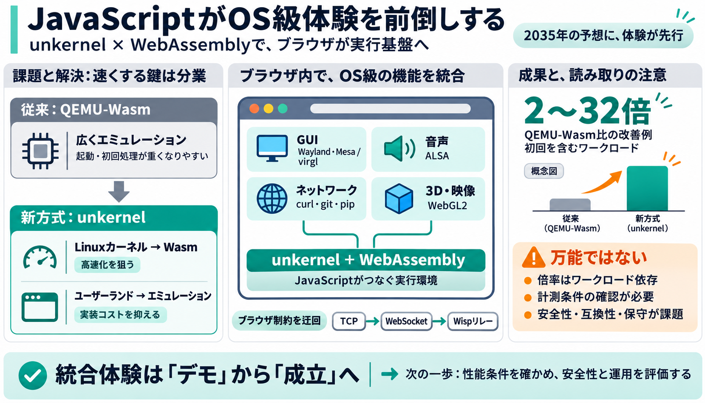

GitHub - pithings/unkernel: A real Linux kernel, compiled to WebAssembly. It boots to a shell in less than a second. · GitHub
Browsers can't open raw TCP sockets, so the page reaches the internet through a Wisp proxy. The default one accepts only…

trynix.devの実験は、「JavaScriptがOS級の実行環境になる」という2035年予想を、AIなどの加速要因で前倒しに見せる内容です（OS級体験 / OS-like experience）
従来の「ブラウザでOS/プログラムを動かす」は、QEMUのような仮想化やWasm中心で進みましたが、性能面で不利になりがちでした。
unkernel（ウンクーネル）は、LinuxをWasm向けにコンパイルしつつ、カーネル側をより高速寄りに動かし、ユーザーランドは主にエミュレーションで成立させる狙いです（分業設計）。
trynix.devの紹介では、GUI・音声・ネットワーク・WebGL（GL）などが一続きでつながり、ブラウザ上でOS級の体験を組み立てています。
本文では、QEMU-Wasmに対してunkernelを使う方式が、初回を含むワークロードで2倍〜32倍の改善を示したとされています。
違いは「何をエミュレートし、何をより高速に寄せるか」。unkernelはカーネル側をWasm寄りにし、初回の重さを減らす設計思想が中心です。
ブラウザ制約で生のTCPソケットを直に開けないため、TCP接続ごとにWebSocketでWispリレーへ流し、通信する、とされています。
検索からの補足では、ブートは約70msで/init、Alpine表示は約0.3sといった説明があるとされています。
補足として、getppid や64バイトreadのような処理がネイティブに近いコスト、fork+exit+waitも数十マイクロ秒といった近さが公開ベンチとして言及されています。
FirefoxをFirefoxタブ内で起動し、さらに入れ子で動かす実験も紹介されています。条件によって4時間以上かかったほど重い（=実用より技術検証色が強い）と明記されています。
この文章の説得力は、未来論を一般論で終わらせず、trynix.devのデモと技術選定（unkernel）で“到達した成果”として提示している点にあります。
注意点として、ベンチ条件（環境差・比較設定・計測回数など）が本文だけでは追えず、また実運用ではセキュリティ・運用コスト・互換性・保守性がボトルネックになり得ます。
まとめると、unkernel＋WasmでOS級統合が近づき、ブラウザが実行環境へ収束していく流れが強く裏付けられています。一方で、ベンチ条件と安全性・運用を別途検証する姿勢が重要です。
このデッキは、ユーザー提示の「要約対象テキスト（Summary/Points/FAQ/My opinion）」と、その中に含まれる検索由来の補足（数値・仕組みの一般説明）を圧縮したものです。
Browsers can't open raw TCP sockets, so the page reaches the internet through a Wisp proxy. The default one accepts only…
System calls stay close to native cost: `getppid` takes about 170 ns (110 ns native, 1.7 µs running under `qemu-system`)…
kernel: starting processes, syscalls, page faults, file and network I/O. In unkernel that path runs at wasm speed. > Boo…
allows intricate shell pipelines and memory mapped file systems to execute in the browser without demanding altered appl…
Among the main current limitations are the absence of an MMU (Memory Management Unit), the inability to modify loaded co…